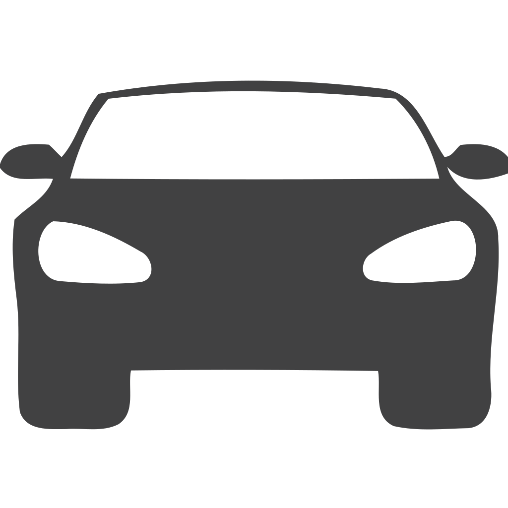

<!DOCTYPE html>
<html lang="en">
    <head>
        <meta charset="UTF-8">
        <meta name="viewport" content="width=device-width, initial-scale=1.0">
        <title>Introduction</title>
        <script type="text/javascript" src="../assets/js/code.js"></script>
        <link rel="stylesheet" href="../assets/css/main.css">
        <link rel="stylesheet" href="../assets/css/modules.css">
    </head>
</html>
<body class="module-5">
    <!-- Navigation progress-container -->
    <div class="nav-container">
        <a href="../index.html">
            <h1>&larr;</h1>
            
        </a>
    </div>
    <!-- Folder Container -->
    <div class="folder-container">
        <div class="back-folder-part">
            <div class="folder-label">Code</div>
        </div>
        <div class="main-folder-part">
            <div class="code-container">
                <span>Copy & Paste the code into Arduino IDE.</span>
            <!-- Arduino Code Block -->
            <div class="code-box">
                <pre id="arduinoCode">
#include &lt;AFMotor.h&gt;
#include &lt;Ultrasonic.h&gt;

// Motor Initialization
AF_DCMotor motor1(1); // Left Front
AF_DCMotor motor2(2); // Left Rear
AF_DCMotor motor3(3); // Right Rear
AF_DCMotor motor4(4); // Right Front

// Ultrasonic Sensor Initialization
Ultrasonic uss1(34,35); // Front Sensor
Ultrasonic uss2(36,37); // Side Front Sensor
Ultrasonic uss3(38,39); // Side Rear Sensor
Ultrasonic uss4(40,41); // Rear Sensor

// Constants
const int DEFAULT_SPEED = 220; // Car speed
const int SPEED_SENSOR_PIN = 21;  // Speed sensor pin number
const int ENCODER_PULSES_PER_ROTATION = 20; // Encoder has 20 slots, so 20 pulses per rotation

// Variables
volatile int pulseCounter = 0; // To count the number of speed sensor pulses
volatile int prev_signalValue = 0; // To store HIGH or LOW signal from speed sensor pulses
int targetPulseCount = 0; // To set the number of targeted pulse counter during rotation
int spaceCounter = 0; // To count the number of pusles between parking space detection

// Variables to store ultrasonic sensors' distance
long USS1 = 0;
long USS2 = 0;
long USS3 = 0;
long USS4 = 0;

int carState = 0;
char* directionState = "stop"; // State include "forward", "backward", "right", "left", and "stop"

bool isParkingSpaceValid = false; // Flag to check if ultrasonic sensors have detected a valid space

void setup() {
  Serial.begin(9600);
  Serial.println("\nModule 4: ");
  delay(2500);
  pinMode(44, OUTPUT); // For left laser
  pinMode(45, OUTPUT); // For right laser

  carState = 0;

  // Attach interrupt to count pulses
  attachInterrupt(digitalPinToInterrupt(SPEED_SENSOR_PIN), countPulse, FALLING);
}

void loop() {
  autoMode(); // Run the autonomous mode
}

void autoMode() {
  USS1 = USSDistance(uss1); // Front ultrasonic sensor
  USS2 = USSDistance(uss2); // Front side ultrasonic sensor
  USS3 = USSDistance(uss3); // Rear side ultrasonic sensor

  // Step 1: Always detect if an object is in front using USS1 (front sensor)
  if (USS1 &lt; 15) {
    stopCar(); // Stop car if object detect in front
    return;  // Skip further steps until the car stops
  }

  // Step 2: Both side sensors (USS2 and USS3) detect a wall
  if (USS2 &lt; 15 && USS3 &lt; 15 && carState == 0) {
    Serial.println("Wall detected on sides, starting to search for parking space...");
    carState = 1; // Start searching for parking space
    stopCar();
  }

  // Step 3: Check for parking space once wall is detected
  if (carState == 1) {
    // Move the car forward and check for parking space
    moveCar("forward", DEFAULT_SPEED);
    
    if (USS2 &lt; 15) { // Reset space counter if USS2 encounter any obstacle
      spaceCounter = 0;
    } else if (USS2 > 15 && spaceCounter > 30) {  
      // Step 3.2: If USS3 detects space (15-30 cm range for parallel parking)
      if (USS3 > 15 && USS3 &lt; 30) {
        Serial.println("Parallel parking space detected.");
        carState = 2;  // Select parallel parking mode
        stopCar();
      }
    } else if (USS2 > 30) {  
      // Step 3.3: If USS3 detects space in the vertical range (30-45 cm)
       if (USS3 > 30 && USS3 &lt; 100) {
        Serial.println("Vertical parking space detected.");
        carState = 3;  // Select vertical parking mode
        stopCar();
      }
    }
  }

  // Step 4: Move forward until another wall is detected before starting parking
  if (carState == 2 || carState == 3) {
    // Continue moving forward until a wall is detected 
    moveCar("forward", DEFAULT_SPEED);
    if (USS2 &lt; 15 && USS3 &lt; 15) {
      stopCar();
      performParking();  // Perform selected parking maneuver
    }
  }

}

void performParking() {
  digitalWrite(44, HIGH);
  digitalWrite(45, HIGH);
  USS4 = USSDistance(uss4); // Rear ultrasonic sensor
  // Make USS4 to keep tracking of rear distance and stop car if there's any object.
  


  if (carState == 2) {
    Serial.println("Performing parallel parking...");
    // carState = 4;
    moveCar("backward", DEFAULT_SPEED);
    rotation(0.95);
    moveCar("left", DEFAULT_SPEED);
    rotation(0.5);
    moveCar("backward", DEFAULT_SPEED);
    rotation(0.8);
    moveCar("right", DEFAULT_SPEED);
    rotation(0.55);
  }


  if (carState == 3) {
    Serial.println("Performing vertical parking...");
    // carState = 4;
    moveCar("backward", DEFAULT_SPEED);
    rotation(1);
    moveCar("left", DEFAULT_SPEED);
    rotation(0.88);
    moveCar("backward", DEFAULT_SPEED);
    rotation(1);
    Serial.println("Parking Completed...");
    carState = 4;
  }
  
  digitalWrite(44, LOW);
  digitalWrite(45, LOW);
}

void blinking() {
    digitalWrite(45, LOW);
    delay(200);
    digitalWrite(45, HIGH);
    delay(200);
    digitalWrite(45, LOW);
    delay(200);
    digitalWrite(45, HIGH);
    delay(200);
    }

long USSDistance(Ultrasonic sensor) {
  Serial.println(sensor.read(CM));
  return sensor.read(CM);
}

// Interrupt function to count pulses from the encoder
void countPulse() {
  // Read the state of the signal pin
  int signalValue = digitalRead(SPEED_SENSOR_PIN);

  // Check if the signal has changed from LOW to HIGH (rising edge)
  if (signalValue == HIGH && prev_signalValue == LOW) {
    pulseCounter++;  // Increment the pulse count
    spaceCounter++;
    // Serial.print("Pulse count: ");
    // Serial.println(pluseCounter);  // Print the counter value to the serial monitor
  }

  // Store the current signal value for the next iteration
  prev_signalValue = signalValue;
}

// Function with pulse-based rotation control
void rotation(float rotation) {
  pulseCounter = 0;  // Reset pulse count
  targetPulseCount = rotation * ENCODER_PULSES_PER_ROTATION;

  // While loop to keep the wheels spinning 
  while (pulseCounter &lt; targetPulseCount) {

  }
  stopCar();
}

// Moves in a specific direction
void moveCar(const char* direction, int speed) {
  setMotorsSpeed(speed);
  setMotorsDirection(direction);
}

// Stops all motors
void stopCar() {
  // Prevent motor coasting by forcing it to run in the opposite direction
  setMotorsDirection("stop");

  motor1.run(RELEASE);
  motor2.run(RELEASE);
  motor3.run(RELEASE);
  motor4.run(RELEASE);

  Serial.println("--- Stopped ---");
  delay(1000);
}

// Sets the speed for all motors
void setMotorsSpeed(int speed) {
  motor1.setSpeed(speed);
  motor2.setSpeed(speed);
  motor3.setSpeed(speed);
  motor4.setSpeed(speed);
}

void setMotorsDirection(const char* direction) {
  if (strcmp(direction, "forward") == 0) {
    motor1.run(FORWARD);
    motor2.run(FORWARD);
    motor3.run(FORWARD);
    motor4.run(FORWARD);
    directionState = "forward";

  } else if (strcmp(direction, "backward") == 0) {
    motor1.run(BACKWARD);
    motor2.run(BACKWARD);
    motor3.run(BACKWARD);
    motor4.run(BACKWARD);
    directionState = "backward";

  } else if (strcmp(direction, "right") == 0) {
    motor1.run(FORWARD);
    motor2.run(FORWARD);
    motor3.run(BACKWARD);
    motor4.run(BACKWARD);
    directionState = "right";

  } else if (strcmp(direction, "left") == 0) {
    motor1.run(BACKWARD);
    motor2.run(BACKWARD);
    motor3.run(FORWARD);
    motor4.run(FORWARD);
    directionState = "left";

  } else if (strcmp(direction, "stop") == 0) {

    if (strcmp(directionState, "forward") == 0) {
      setMotorsDirection("backward");
    } else if (strcmp(directionState, "backward") == 0) {
      setMotorsDirection("forward");
    }
    delay(25);
    directionState = "stop";
  }

}
    
                </pre>
            </div>
            <!-- Copy Button -->
            <button onclick="copyCode()">Copy Code to Clipboard</button>
            <!-- Feedback Message -->
            <div id="copyFeedback" class="copy-feedback"></div>
            <span>Click on Verify &#10141; Upload to Arduino Mega Board!</span>
        </div>
        </div>
    </div>
    <!-- Controls Container -->
    <div class="controls-container">
        <button class="previous-button" 
        onclick="window.location.href='05_Introduction.html';">
            <span>Previous</span>
        </button>
        <button class="replay-button" onclick="document.getElementById('folder-video').play();">
            <span>Replay</span>
        </button>
        <button class="next-button" 
        onclick="window.location.href='05_Parallel.html';">
            <span>Next</span>
        </button>
    </div>
    
    <!-- Progress Container -->
    <div class="progress-container">

        <!-- progress step -->
        <div class="progress-step completed-step"
        onclick="window.location.href='05_Introduction.html';">
            <div class="progress-icon">

                
            </div>
            <span class="progress-text">Introduction</span>
        </div>
        
        <div class="arrow"><span></span><span></span><span></span></div>


        <!-- progress step -->
        <div class="progress-step active-step">
            <div class="progress-icon">
              
            </div>
            <span class="progress-text">Code</span>
        </div>
        
        <div class="arrow"><span></span><span></span><span></span></div>


        <!-- progress step -->
        <div class="progress-step"
        onclick="window.location.href='05_Parallel.html';">
            <div class="progress-icon">
              
            </div>
            <span class="progress-text">Parallel</span>
        </div>

        <div class="arrow"><span></span><span></span><span></span></div>
        

        <!-- progress step -->
        <div class="progress-step" onclick="alert('You have not completed the next step yet!')">
            <div class="progress-icon">
              
            </div>
            <span class="progress-text">Vertical</span>
        </div>

        <div class="arrow"><span></span><span></span><span></span></div>

        <!-- progress step -->
        <div class="progress-step" onclick="alert('You have not completed the next step yet!')">
            <div class="progress-icon">
              
            </div>
            <span class="progress-text">Complete</span>
        </div>

        
    </div>


</body>

<style>

    


</style>